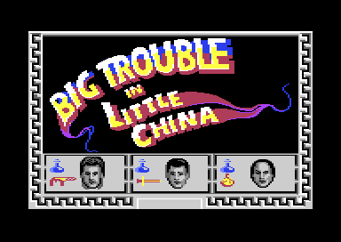
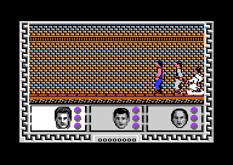
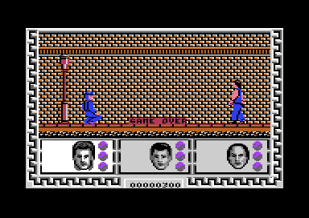

<meta charset="utf-8">
<meta name="viewport" content="width=device-width, initial-scale=1">
<title>{{title}}</title>
<link rel="preconnect" href="https://fonts.googleapis.com">
<link rel="stylesheet" href="https://fonts.googleapis.com/css2?family=Lato:wght@400;700;900&family=IBM+Plex+Mono:wght@400;500&display=swap">
<link rel="stylesheet" href="reference/btilc-page.css">
<!-- tabs -->
<header class="hero">
  <p class="eyebrow">{{platform}} · {{year}} · {{publisher}}</p>
  <h1>{{title}}</h1>
  <p class="sub">Three heroes walk one long street to rescue Lo Pan's captives. Beat him and take the prize, and the game says GAME OVER.</p>
</header>
<main class="wrap">
<section id="game">
  <h2 class="t">Three heroes against Lo Pan</h2>
  <p>John Carpenter's 1986 film sends the truck driver Jack Burton, the restaurant owner Wang Chi and the sorcerer Egg Shen under San Francisco's Chinatown to rescue two kidnapped women from the ancient magician Lo Pan. Electric Dreams turned it into a fighting game, designed by Mev Dinc, for the Spectrum, the Amstrad and the Commodore 64.<sup class="fn"><a href="about.html#src-1" title="Wikipedia, Big Trouble in Little China (video game)">1</a></sup></p>
  <figure class="overview-shot"><figcaption>The title screen, which waits for fire on the joystick in port 1. This copy has no loading picture: it starts here.</figcaption></figure>
  <p>On the Commodore 64 the whole game is one street, walked from right to left: <a href="levels.html#parts">Chinatown</a>, then <a href="levels.html#parts">the sewers</a>, then <a href="levels.html#parts">Lo Pan's halls</a>, and at the end <a href="levels.html#parts">a temple</a>. You control <a href="gameplay.html#heroes">one hero at a time</a> and the other two follow. Jack shoots, Wang Chi kicks and wields a sword, and Egg Shen throws magic. You can swap between them at any moment with <a href="controls.html#keys">the keys B, C and S</a>.</p>
  <p><a href="gameplay.html#enemies">Lo Pan's men</a> come one at a time from the left, and in the sewers <a href="gameplay.html#monsters">monsters rise from the floor</a>. The heroes' <a href="gameplay.html#energy">energy</a> drains with every blow and with time. The score buys <a href="gameplay.html#bonuses">weapons, strength and food</a>. At the temple, <a href="gameplay.html#end">Lo Pan himself</a> floats over the heroes, and only after ten blows on him does the prize appear.</p>
  <figure class="overview-shot"><figcaption>Chinatown at the start of the walk. The three portraits below light the active hero and show each one's energy.</figcaption></figure>
</section>

<section id="makers">
  <h2 class="t">The people behind the game</h2>
  <p>The only name on record for the game is its designer's, Mev Dinc.<sup class="fn"><a href="about.html#src-1" title="Wikipedia, Big Trouble in Little China (video game)">1</a></sup> The Commodore 64 version shows no credits on screen and none were found in its memory. A games database names Focus Creative Enterprises as the developer, a source we have not been able to check.<sup class="fn"><a href="about.html#src-3" title="Games Database, Big Trouble in Little China (C64)">3</a></sup></p>
  <p>Whoever wrote it built the screen the hard way. The game keeps two whole pictures and redraws <a href="graphics.html#screen">every tile of the street</a> into the hidden one each loop, then swaps them. Each fighter is <a href="graphics.html#parts">assembled from strips seven lines high</a> and shown by a sprite multiplexer. That work is why the street scrolls smoothly behind large figures, and also why the game runs at about ten loops a second.</p>
</section>

<section id="reception">
  <h2 class="t">Panned on the Commodore 64</h2>
  <p>The Commodore 64 version was poorly received. <i>Commodore User</i> gave it 3 out of 10 in May 1987,<sup class="fn"><a href="about.html#src-1" title="Wikipedia, Big Trouble in Little China (video game)">1</a></sup> with Bill Scolding calling it “a dull, insipid little game”.<sup class="fn"><a href="about.html#src-2" title="Commodore User 44, May 1987">2</a></sup> <i>Zzap!64</i> gave it 34 per cent in June 1987 and called it a “poor movie tie-in”.<sup class="fn"><a href="about.html#src-1" title="Wikipedia, Big Trouble in Little China (video game)">1</a></sup> A later issue lowered the score to 18 per cent.</p>
  <p>The reviewers were not wrong about the action. A blow lands only on one frame of its animation and only if its <a href="gameplay.html#fighting">striking point</a> is inside the enemy's body, so many swings that look like hits miss. Sound is <a href="music.html#effects">eight short effects</a> with no music at all.</p>
</section>

<section id="explore">
  <h2 class="t">What is hidden in the code</h2>
  <p>Reading the code turned up things a player would struggle to find. Winning the game <a href="discoveries.html#win">paints GAME OVER</a>, the same as losing. An enemy that slips past the heroes <a href="discoveries.html#lost">takes its points off your score</a>. The heroes <a href="discoveries.html#time">tire even when standing still</a>, and a second joystick in port 1 <a href="discoveries.html#pause">pauses the game</a>.</p>
  <figure class="overview-shot"><figcaption>The game's reward for winning, after the prize was taken: GAME OVER and 300 points.</figcaption></figure>
  <p class="overview-links"><a href="levels.html#map">Walk the whole street</a> <a href="graphics.html#figures">See every fighter move</a> <a href="music.html#effects">Hear the eight sounds</a> <a href="source.html">Read the code</a></p>
</section>
</main>
